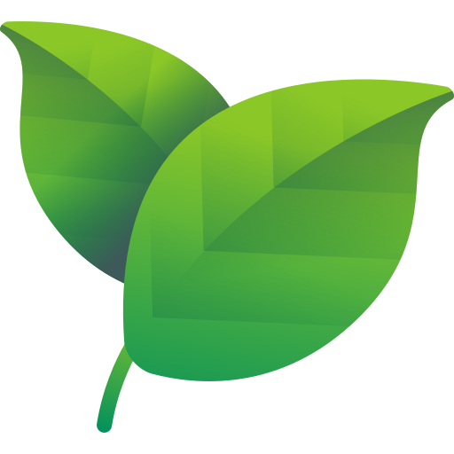

FloraTrackerMake Time To Grow
ConHacks 2026 · Best Beginner Hack · Hackathon prototype
Overview
FloraTracker puts your plants and their sensor readings on your phone. Check whether the soil is dry, see the room temperature and humidity, or look back at recent readings before deciding what the plant needs.
Built with two teammates in 24 hours at ConHacks 2026, the project won Best Beginner Hack. The mobile app uses React Native, Expo, and TypeScript. A Flask API on a Raspberry Pi provides the sensor data, while Supabase handles sign-in, plant records, and photo storage.
The app also includes Flora, a Gemini-powered assistant that uses current sensor readings and recent history to answer plant care questions. This is the phone app for the FloraTracker SCADA plant monitoring project.
App Features
- Your garden: create plant profiles with names, species, notes, and camera photos. Browse plants and mark favourites.
- Live readings: view temperature, humidity, soil moisture, and water level. The sensor screen refreshes every five seconds and supports pull-to-refresh.
- History: review past readings and charts to see how conditions have changed.
- Flora assistant: ask about plant health or watering, with current readings and recent history supplied by the backend.
- Light controls: switch the connected plant light from the app or through the assistant when the light card is enabled.
- In-app inbox: see care messages based on plant vitality, dry soil, and low humidity.
- Accounts: sign in with Supabase and manage plant records and uploaded photos.
How It Connects
↔ Flask API on Raspberry Pi
↔ DHT22 and ADS1115 sensor readings
Supabase — authentication, plant records, photos
Snowflake — sensor history
Gemini — Flora chat responses
The phone requests live readings from the Pi and displays them as sensor cards. The backend reads temperature and humidity from a DHT22 and uses an ADS1115 to read the soil moisture and water level sensors. History requests read stored measurements from Snowflake.
The hackathon setup connects to the Pi over a Tailscale network. It needs the Pi and backend services running; it is not a standalone plant identification app.
Demo Video
Project Photos


Team
Abd Ulrahman Mardini, Liban Nur, and Ahmed Somaan.